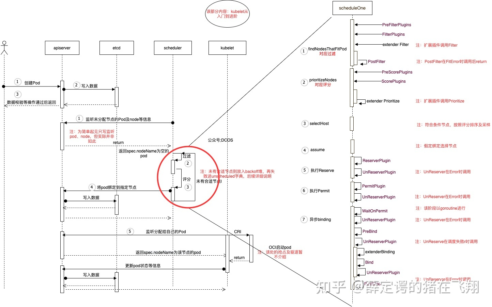
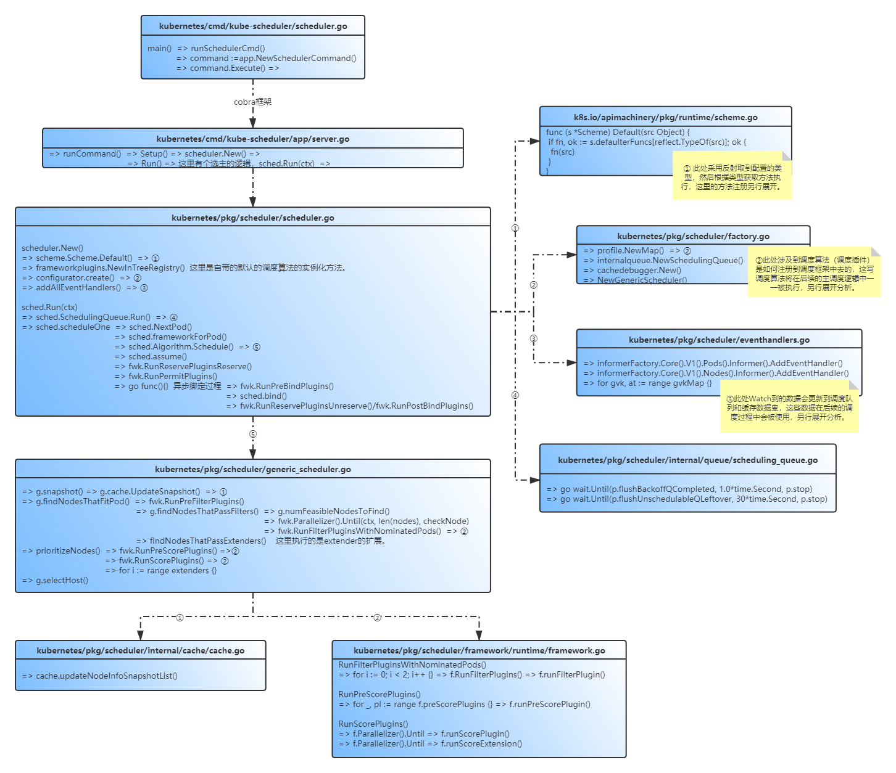
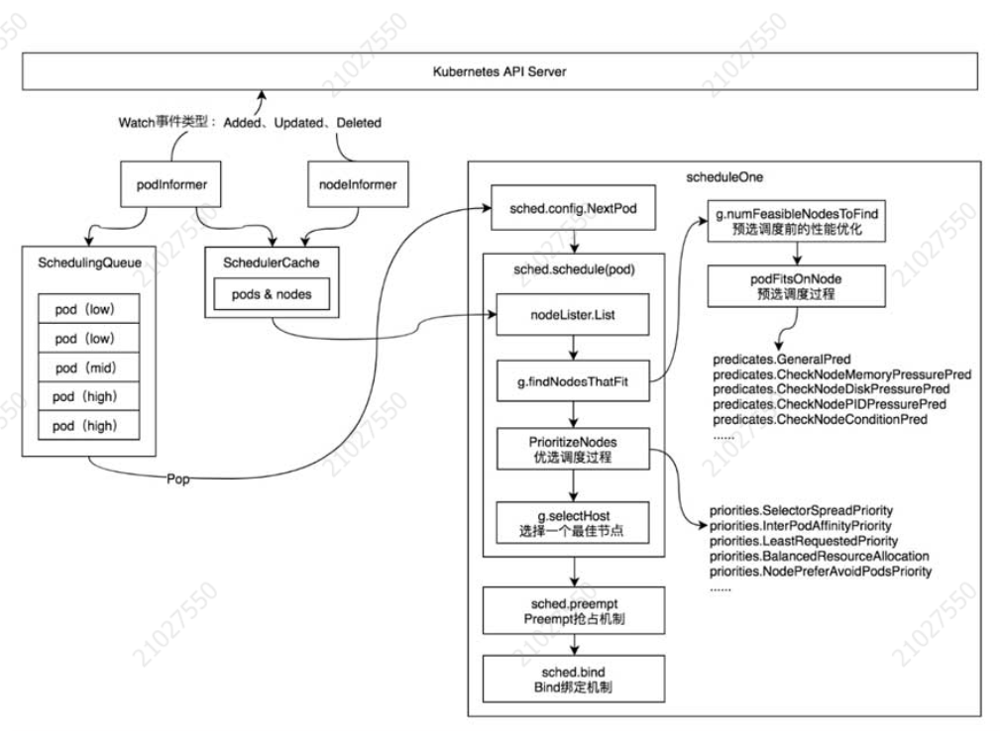
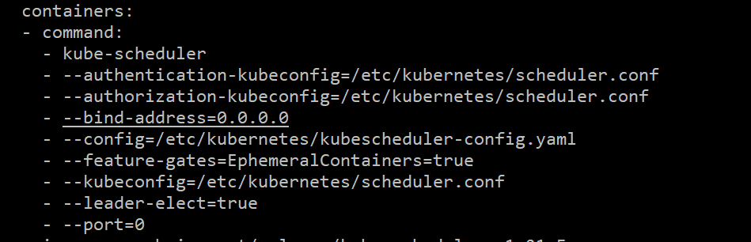
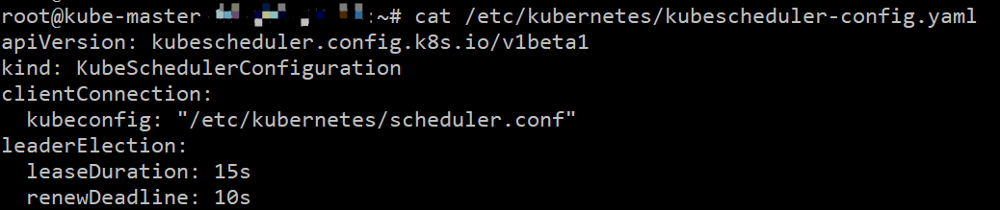
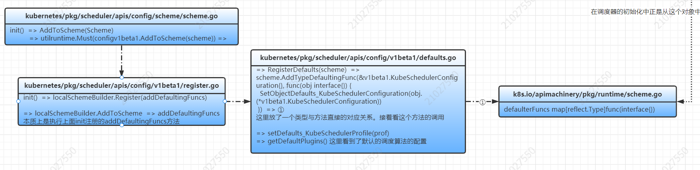
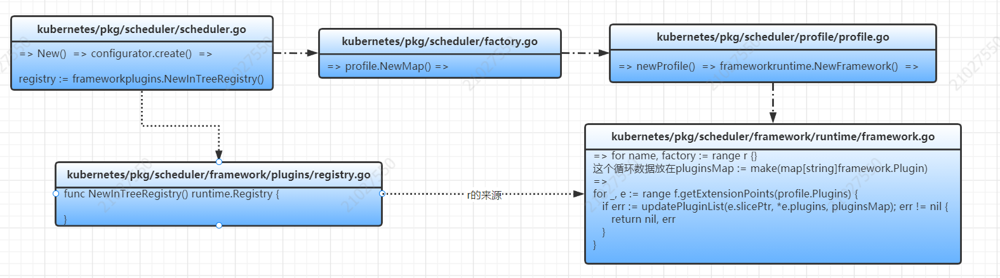
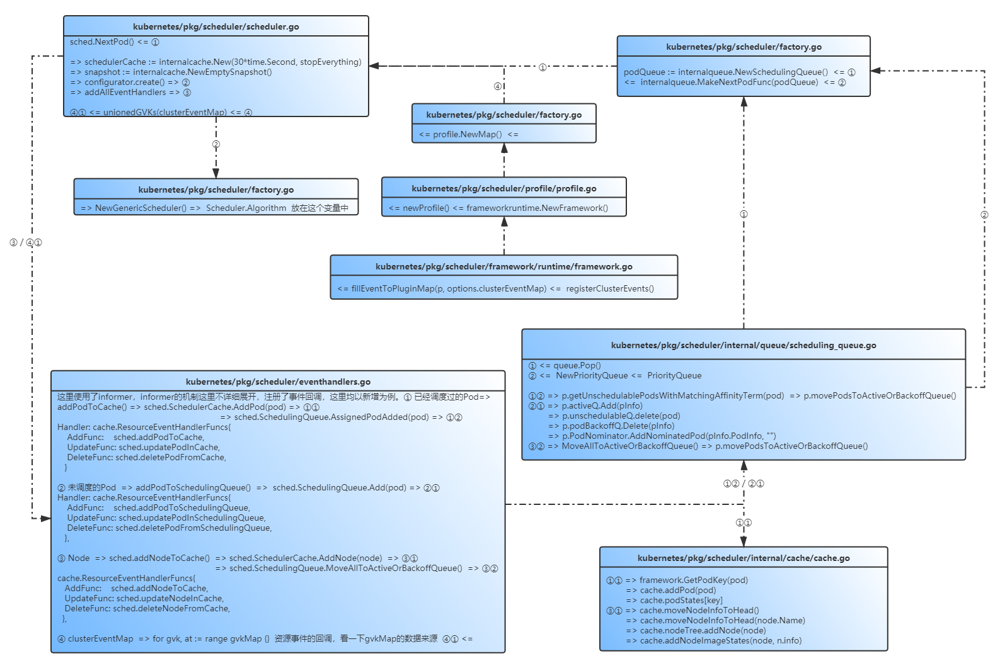

Kube-Scheduler负责Pod的节点分配，通过预选和优选两个过程，为Pod选择一个合适的节点，预选和优选过程中包含很多内置的调度算法，在实际的场景中，也可能根据具体的业务场景基于原有的调度器进行扩展，或者完全重新编写一个新的调度器，Kubernetes是如何进行节点调度的，又是如何支持调度器扩展的。
组件介绍 Kube-Scheduler依托第二代调度框架，提供了灵活的配置方式和扩展方法，可以作用在调度过程中各个环境，乃至最后的绑定过程。用户可以根据自己的业务场景灵活搭配。
Kube-scheduler的调度框架，因为要支持用户自定义的配置和扩展，具有一定的抽象度，阅读起来有些晦涩，本文侧重于整体的调度流程实现以及与用户自定义扩展的契合。就一些迷惑点，进行分析。
特别说明
本次源码分析，主要为了理清Kubernetes核心组件的整体实现思路，会着重分析一些看源码时候比较迷惑的点， 但并不会局限于全部的实现细节，也不局限于某个版本，因此代码的原本是直接使用下面命令clone的Github上最新代码
git clone –depth=1 https://github.com/kubernetes/kubernetes.git。
笔者认为，也许代码的实现细节会随着版本的更迭，有所更新，但核心的实现思路并不会有太大变化，只要理清了这些核心的实现，在工作学习中，结合具体场景具体问题再做具体分析，再返回头来深究一些细节，也是会事半功倍的。
源码分析不是一蹉而就的，需要反复阅读，反复考究。温故而知新。
源码分析 下图使用知乎大神的帖子，清晰展示了整个调度过程涉及到的点，有助于理解整个调度框架的整体过程。

主线脉络 下图是根据代码整理的调度器的方法调用主干过程，其中黄色标签的三个点，因为篇幅原因，未能在本图上继续展开，将在2.2中予以说明。

上述代码的主干调用关系，很难看出调度器工作过程中涉及到的主要组件和它们之间的关系，在《Kubernetes源码剖析》书中，有一副图片，整体上展示了整个调度过程，各组件之间的关系。这里直接引用过来供参考。

下面将详细解释笔者阅读源码时一些比较困惑的点，结合这些细节的点，来理解整个调度过程和各组件之间的协作。
关键代码 调度算法（插件） 调度器会默认提供一些调度算法，并通过配置的方式供用户扩展，最后这些调度算法会应用在调度框架中。
默认配置 调度器通过KubeSchedulerConfiguration提供配置选项，用户可以在调度器的命令行中使用–config指定对应的资源清单。
下面是在Kubernetes v1.21.5使用–write-config-to默认导出的一份配置资源文件，这里不涉及任何用户自定义的部分，先来看一下有个直观的认识。
1 2 3 4 5 6 7 8 9 10 11 12 13 14 15 16 17 18 19 20 21 22 23 24 25 26 27 28 29 30 31 32 33 34 35 36 37 38 39 40 41 42 43 44 45 46 47 48 49 50 51 52 53 54 55 56 57 58 59 60 61 62 63 64 65 66 67 68 69 70 71 72 73 74 75 76 77 78 79 80 81 82 83 84 85 86 87 88 89 90 91 92 93 94 95 96 97 98 99 100 101 102 103 104 105 106 107 108 109 110 111 112 113 114 115 116 117 118 119 120 121 122 123 124 125 126 127 128 129 130 131 132 133 134 135 136 137 138 139 140 141 142 143 144 145 146 147 148 149 150 151 152 153 154 155 156 157 158 159 160 161 162 apiVersion: kubescheduler.config.k8s.io/v1beta1 clientConnection: acceptContentTypes: "" burst: 100 contentType: application/vnd.kubernetes.protobuf kubeconfig: /etc/kubernetes/scheduler.conf qps: 50 enableContentionProfiling: true enableProfiling: true healthzBindAddress: 0.0 .0 .0 :10251 kind: KubeSchedulerConfiguration leaderElection: leaderElect: true leaseDuration: 15s renewDeadline: 10s resourceLock: leases resourceName: kube-scheduler resourceNamespace: kube-system retryPeriod: 2s metricsBindAddress: 0.0 .0 .0 :10251 parallelism: 16 percentageOfNodesToScore: 0 podInitialBackoffSeconds: 1 podMaxBackoffSeconds: 10 profiles: - pluginConfig: - args: apiVersion: kubescheduler.config.k8s.io/v1beta1 kind: DefaultPreemptionArgs minCandidateNodesAbsolute: 100 minCandidateNodesPercentage: 10 name: DefaultPreemption - args: apiVersion: kubescheduler.config.k8s.io/v1beta1 hardPodAffinityWeight: 1 kind: InterPodAffinityArgs name: InterPodAffinity - args: apiVersion: kubescheduler.config.k8s.io/v1beta1 kind: NodeAffinityArgs name: NodeAffinity - args: apiVersion: kubescheduler.config.k8s.io/v1beta1 kind: NodeResourcesFitArgs name: NodeResourcesFit - args: apiVersion: kubescheduler.config.k8s.io/v1beta1 kind: NodeResourcesLeastAllocatedArgs resources: - name: cpu weight: 1 - name: memory weight: 1 name: NodeResourcesLeastAllocated - args: apiVersion: kubescheduler.config.k8s.io/v1beta1 defaultingType: System kind: PodTopologySpreadArgs name: PodTopologySpread - args: apiVersion: kubescheduler.config.k8s.io/v1beta1 bindTimeoutSeconds: 600 kind: VolumeBindingArgs name: VolumeBinding plugins: bind: enabled: - name: DefaultBinder weight: 0 filter: enabled: - name: NodeUnschedulable weight: 0 - name: NodeName weight: 0 - name: TaintToleration weight: 0 - name: NodeAffinity weight: 0 - name: NodePorts weight: 0 - name: NodeResourcesFit weight: 0 - name: VolumeRestrictions weight: 0 - name: EBSLimits weight: 0 - name: GCEPDLimits weight: 0 - name: NodeVolumeLimits weight: 0 - name: AzureDiskLimits weight: 0 - name: VolumeBinding weight: 0 - name: VolumeZone weight: 0 - name: PodTopologySpread weight: 0 - name: InterPodAffinity weight: 0 permit: {} postBind: {} postFilter: enabled: - name: DefaultPreemption weight: 0 preBind: enabled: - name: VolumeBinding weight: 0 preFilter: enabled: - name: NodeResourcesFit weight: 0 - name: NodePorts weight: 0 - name: PodTopologySpread weight: 0 - name: InterPodAffinity weight: 0 - name: VolumeBinding weight: 0 - name: NodeAffinity weight: 0 preScore: enabled: - name: InterPodAffinity weight: 0 - name: PodTopologySpread weight: 0 - name: TaintToleration weight: 0 - name: NodeAffinity weight: 0 queueSort: enabled: - name: PrioritySort weight: 0 reserve: enabled: - name: VolumeBinding weight: 0 score: enabled: - name: NodeResourcesBalancedAllocation weight: 1 - name: ImageLocality weight: 1 - name: InterPodAffinity weight: 1 - name: NodeResourcesLeastAllocated weight: 1 - name: NodeAffinity weight: 1 - name: NodePreferAvoidPods weight: 10000 - name: PodTopologySpread weight: 2 - name: TaintToleration weight: 1 schedulerName: default-scheduler
在这个实际的集群中，看一下kube-scheduler的启动参数

实际指定的配置内容如下：

重点放在profiles这个字段上，这是一个数组，用户可以定义多个profile然后在pod中指定调度器的名称来选择使用对用的调度器对其进行调度，如果不指定，默认使用default-scheduler这一默认调度器。但一般情况下，如果集群中存在多个调度器，需要考虑相互之间的资源隔离问题。
最终生成的使用配置对象与启动时指定的对象相比，多了许多内容，这里重点关注profiles中调度算法如何填充进去的，通过源码来看一下。

最后将不同类型配置对应的初始化方法注册在defaulterFuncs这个变量中，而调度器初始化的代码中，①的黄色标签最后的代码正是从这个变量中，根据类型获取到初始化方法然后执行的。
这里用户自定义配置与默认配置merge的过程，略过不计。
注册调度框架 在2.1调度器代码的主线脉络的图中，实际的调度过程，大量从frameworkImpl对象中获取实例化的调度算法对象，然后执行相应的过滤，从frameworkImpl这个对象的定义中，找到了关于各个调度点的调度器集合的定义（如下），那么这些实例化的调度算法对象，是如何将自己注册给调度框架的呢？
1 2 3 4 5 6 7 8 9 10 11 12 13 14 15 16 17 type frameworkImpl struct { ...省略... queueSortPlugins []framework.QueueSortPlugin preFilterPlugins []framework.PreFilterPlugin filterPlugins []framework.FilterPlugin postFilterPlugins []framework.PostFilterPlugin preScorePlugins []framework.PreScorePlugin scorePlugins []framework.ScorePlugin reservePlugins []framework.ReservePlugin preBindPlugins []framework.PreBindPlugin bindPlugins []framework.BindPlugin postBindPlugins []framework.PostBindPlugin permitPlugins []framework.PermitPlugin ...省略... }
在2.2.1.1中生成了调度器的配置文件，最终放到了内置的资源对象KubeSchedulerConfiguration中，这里重点关注Profiles和Extenders两个slice，这都是调度器的扩展方式。
Extenders的扩展，类似于webhook的方式，是发送请求到另一个服务，代码不在调度器的主逻辑中，松耦合，但是因为不是本地方法调用，性能要差一些。
基于以上，看一下调度算法实例在调度框架的注册。

调度队列、缓存 先来看一下调度器的数据结构：
1 2 3 4 5 6 7 8 9 10 11 12 13 14 15 16 17 18 19 20 21 22 23 24 25 26 27 28 29 30 type Scheduler struct { // It is expected that changes made via SchedulerCache will be observed // by NodeLister and Algorithm. SchedulerCache internalcache.Cache Algorithm ScheduleAlgorithm Extenders []framework.Extender // NextPod should be a function that blocks until the next pod // is available. We don't use a channel for this, because scheduling // a pod may take some amount of time and we don't want pods to get // stale while they sit in a channel. NextPod func() *framework.QueuedPodInfo // Error is called if there is an error. It is passed the pod in // question, and the error Error func(*framework.QueuedPodInfo, error) // Close this to shut down the scheduler. StopEverything <-chan struct{} // SchedulingQueue holds pods to be scheduled SchedulingQueue internalqueue.SchedulingQueue // Profiles are the scheduling profiles. Profiles profile.Map client clientset.Interface }
在这里面重点关注调度队列SchedulingQueue和调度缓存SchedulerCache。
SchedulingQueue是PriorityQueue的实例化对象，其中有三个队列：
1 2 3 4 5 6 7 8 9 10 11 12 13 14 type PriorityQueue struct { ...省略... activeQ *heap.Heap podBackoffQ *heap.Heap unschedulableQ *UnschedulablePodsMap ...省略... }
SchedulerCache的数据结构如下：
1 2 3 4 5 6 7 8 9 10 11 12 13 14 15 16 17 18 19 20 type schedulerCache struct { stop <-chan struct{} ttl time.Duration period time.Duration // This mutex guards all fields within this cache struct. mu sync.RWMutex // a set of assumed pod keys. // The key could further be used to get an entry in podStates. assumedPods sets.String // a map from pod key to podState. podStates map[string]*podState nodes map[string]*nodeInfoListItem // headNode points to the most recently updated NodeInfo in "nodes". It is the // head of the linked list. headNode *nodeInfoListItem nodeTree *nodeTree // A map from image name to its imageState. imageStates map[string]*imageState }
在调度的主逻辑中，通过podInfo := sched.NextPod() 从调度队列中拿到了下一个待调度的Pod，然后执行调度过程，从调度缓存中拿到节点的snapshot，然后执行对应的调度算法，下面来看一下调度队列，调度缓存的数据是如何维护的。

当监听到Node/Pod的事件后，需要更新缓存数据和调度队列。这其中需要注意一些点：
1）如果事件可能会让新的节点调度起来（例如新增Node/Pod调度到新的节点亲和性发生变化）那么需要从unschedulableQ/backoffQ队列新加入到调度队列activeQ中。
2）SchedulerCache中维护了一个node的双向链表，每次会将最新更新的Node移动到链表的头部。
3）资源事件的回调处理。
知识扩展 在阅读调度器的源码过程中，重点关注了调度框架的实现，以及调度框架如何让用户更容易地扩展，目前了解到的一些关于调度框架的扩展的场景，包括：
1）腾讯开源的GaiaGPU中的GPU Scheduler组件。
论文笔记《GaiaGPU：Sharing GPUs in Container Clouds》 。
2）大数据的一些跑批任务，使用Kubernetes进行资源调度，需要考虑按Group调度和资源的碎片化问题。这里面也涉及到了Serveless的一些技术，使用Virtual Kubelet在Serverless平台进行弹性伸缩。
目前了解到的调度器扩展主要有：
1）通过配置文件改变默认的default-scheduler的参数。
2）自定义自己的调度器。
3）使用extender或者是plugins对调度器进行扩展。extender类似于webhook的方式，是通过远程调用第三方服务来执行调度判定，性能较差，未来可能会被废弃。而plugins的方式，使用本地方法调用，性能上有优势，但是因为需要重新编译调度器，耦合调度器的代码，在Kubernetes版本升级兼容可能存在问题。